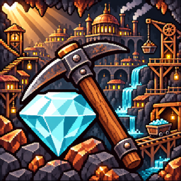

地下採掘都市
広大な地下に眠る、たった1粒のダイヤを地上へ持ち帰れ — Underground Mining City
どんなゲーム？
横5,000×縦10,000マスの広大な地下。どこかに1粒だけ埋まったダイヤを探し、地上の収集装置へ持ち帰ればクリアです。掘った資源を換金して道具を買い替え、採掘機やコンベアで拠点を育てながら、少しずつ深くへ潜っていく横画面の2D採掘ゲームです。
- 押しっぱなしで掘る手応え。鉱脈は連鎖して砕け、深いほど高価な鉱石が眠ります
- 道具・スーツ・設備は手作り機械から重力制御まで10世代
- 地底湖、結晶地帯、発光キノコの森、火山帯など7つの地帯と、遺跡や碑文の物語
- 酸素、崩落、出水、溶岩。地下の危険を設備で乗り越える